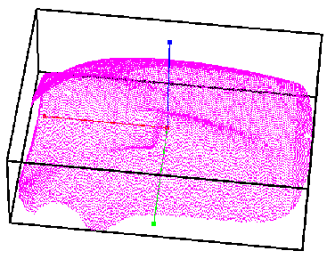
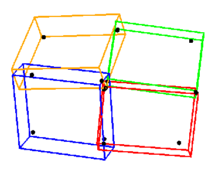

The basis for our reconstruction is the decomposition of a scattered
point set into a 3D strip tree.
Our structure is similar to a quadtree, except that each node in our tree represents a bounding
box whose orientation is defined by the best-fit plane approximating the data points inside a bounding box.
After each decomposition step, the new tree structure defines a better
appoximation to the underlying data points.
A bounding box for all given data points is computed.
(The three box axes are parallel to the global coordinate system axes).
This bounding box is re-oriented so that its three axes are parallel to the three axes
defined by the principal directions of the underlying point set, obtained by principal
component analysis (PCA).
This step defines the best-fit (least-squares) plane approximating the data points.
The figure below shows the root bounding box and the local coordinates frame for the skidoo model obtained
from Hoppe's website at Microsoft.
|  |  |
Left: Root bounding box and local coordinate frame for skidoo model.
Right: The 16 box points for a 2x2 group of nodes.
|
The root bounding box is recursively subdivided until the resulting set of bounding boxes,
all re-oriented according to their principal directions, approximates the data
points by least squares planes, within a user-defined error tolerance.
In some cases with sparse data, the subdivision must stop when there are not enough points
to determine a coordinate frame.
The resulting tree of bounding boxes, the strip tree, is used to fit a set of surfaces
approximating the data points inside each box.
Once the strip tree is decomposed so that the leaf nodes of the tree all have an error
below a prespecified error threshold, the strip tree approximation is used to
construct surfaces that approximate the data points in each box.
|
{kind=link}
{kind=link}
{kind=link}
{kind=link}
{kind=link}
{kind=link}
{kind=link}
{kind=link}
{kind=link}
{kind=link}
{kind=link}